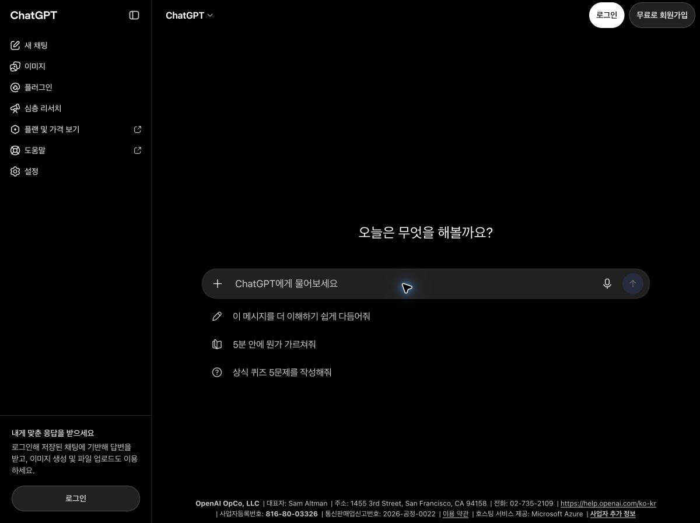
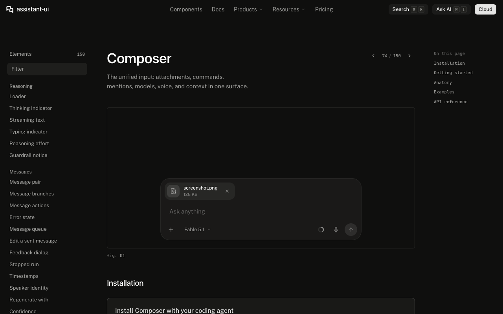
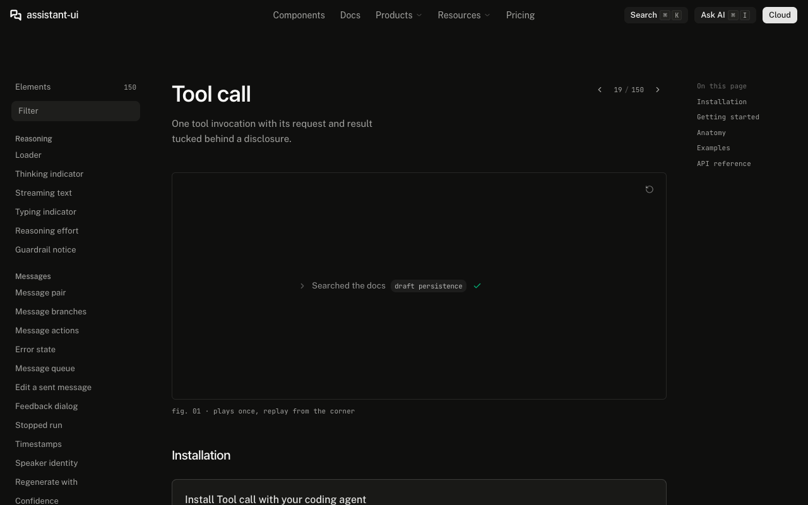
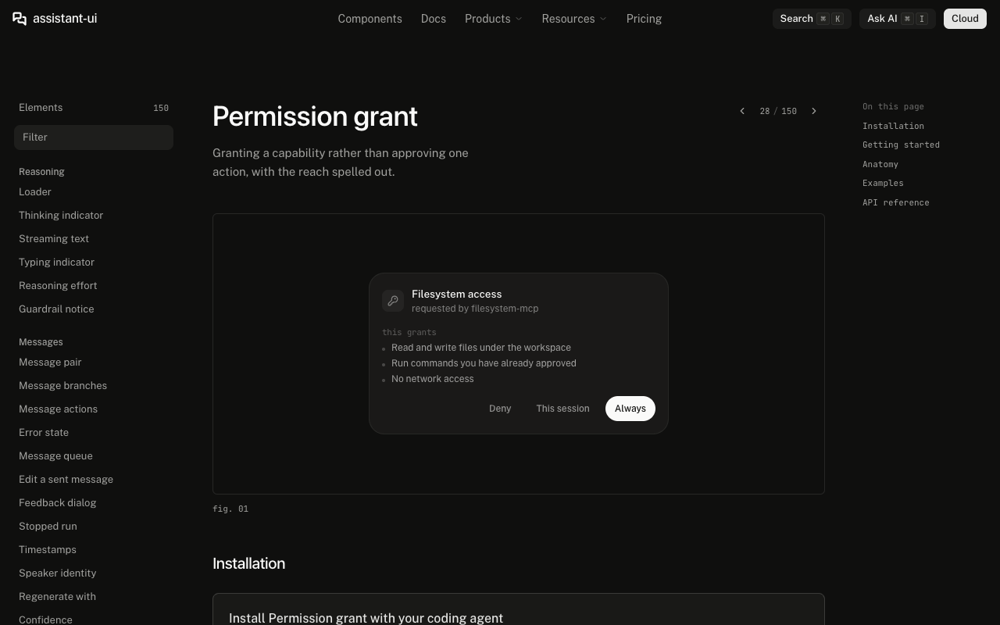
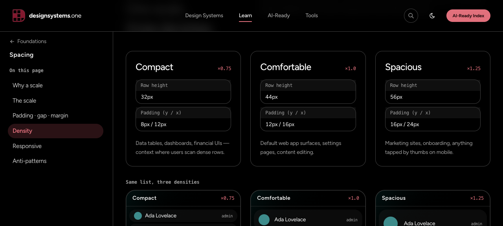
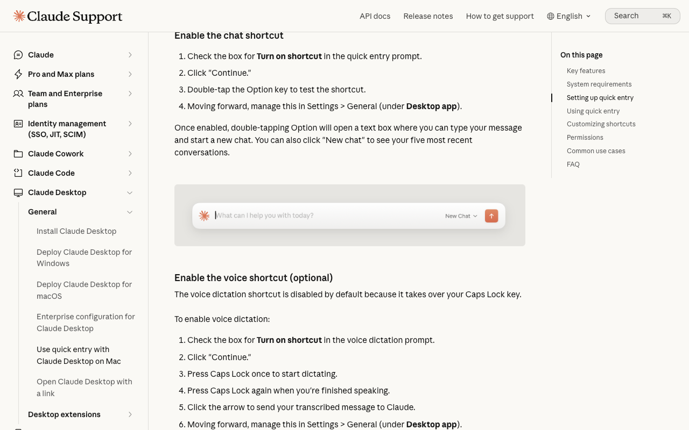
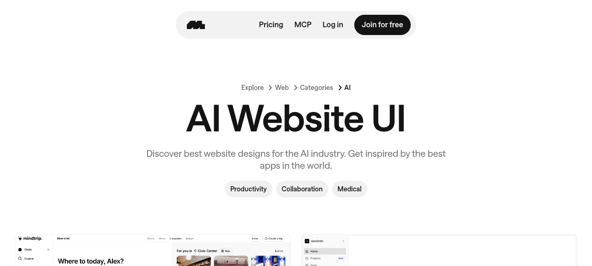

← 후보 비교화면을 직접 확인한 근거
2026-10-03 · 관찰·추론·접근 제한을 구분했습니다. 이미지는 참조 자료이며, 프로젝트의 최종 디자인이나 실제 앱 기능을 의미하지 않습니다. Figma는 기존 프로젝트 자산을 실제 MCP로 확인했습니다. shadcn MCP는 임시 stdio 연결로 조회에 성공했으며 영구 연결은 아닙니다.
Chrome / 1200×897 / DPR2. 빈 컴포저52px, 새 채팅36px, UI14px. 로그인 전 dark 화면이며 데스크톱 앱 측정은 아님.

실제 데모 / 1280×800. 입력15px, 컨트롤32px, 아이콘16px. 첨부 포함158.5px 전체 높이를 빈 컴포저 규격으로 적용하지 않음.

Base UI/Nova 실제 데모. 사이드바256px, 행32px, 글자14px, 아이콘16px. MCP New York/Radix 소스와 다른 예제.
일반 도구 결과는 가벼운 펼침 행. 애니메이션 상태에 따라 높이가 달라짐.

범위·요청 주체·명시적 선택을 유지. 권한 승인과 도구 실행 결과를 구분해야 함.

가이드 compact32 / comfortable44 / spacious56. 실제 제품 측정값이 아닌 가이드 제안.

공식 문서의 이미지. 전체 데스크톱 대화창이나 인증된 사이드바를 직접 측정한 근거가 아님.

공개 썸네일만 확인. 실제 MCP initialize401, 인증된 화면 검색 불가.
